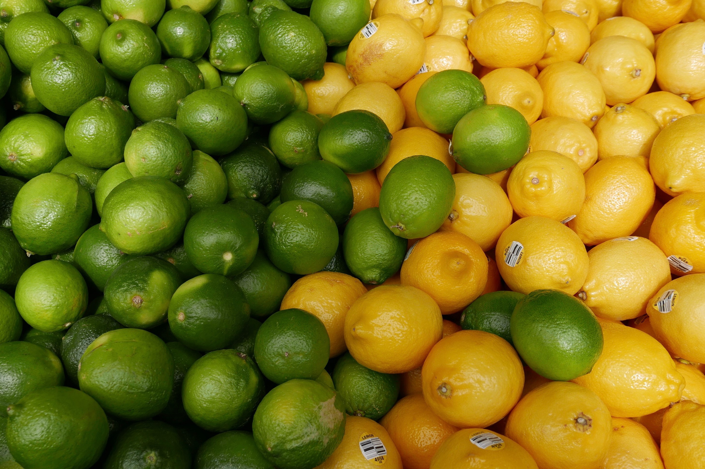
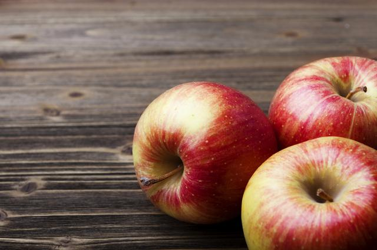
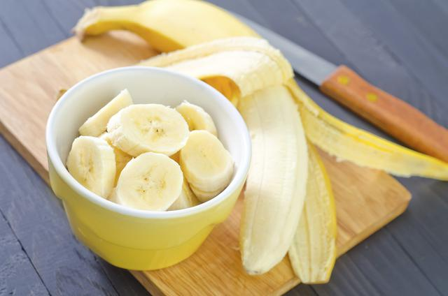
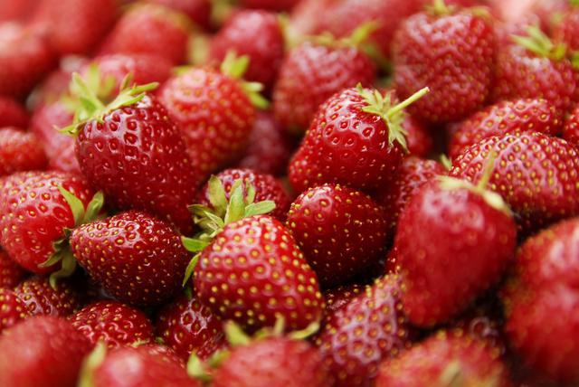
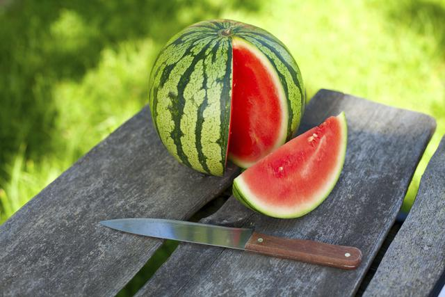
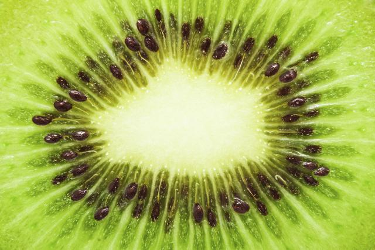
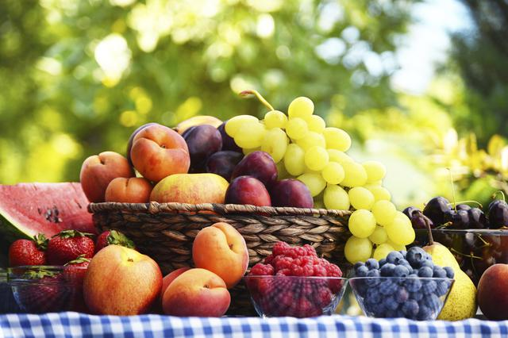

Si realmente crees que el medio ambiente es menos importante que la economía, intenta aguantar la respiración mientras cuentas tu dinero. .
Guy R. McPherson. Científico estadounidense

La riqueza y variedad de las frutas |
Los frutos secos |
|---|---|
|
Lo de las frutas no se limita solo a sus deliciosos y variados sabores, sino también a su riqueza nutricional
y a su gran diversidad de presentaciones. Hay dos tipos de frutas: las frutas frescas y los frutos secos
y cada uno de ellos ofrece nutrientes esenciales para el óptimo funcionamiento de nuestro organismo y,
si combinamos ambos en nuestra dieta diaria, se les puede sacar el máximo provecho. Podemos comerlos desde
el desayuno, al medio día, con la comida o como snack, a toda hora son nutritivos y deliciosos.
|
Se les llama de esta manera debido a que su composición natural tiene menos de un 50% de agua. Son alimentos energéticos, ricos en grasas, proteínas y oligoelementos además de vitaminas del grupo B y ácidos Omega 3. Frutos secosPueden distinguirse por dos tipos de ellos: los que tienen cáscara dura como almendras, piñones, semillas de calabaza o girasol, avellanas, castañas, nueces y pistaches o bien, las frutas deshidratadas como uvas pasas, ciruelas disecadas, chabacanos, dátiles, higos secos, etcétera. Son muy utilizados en la cocina internacional, ideales para acompañar ensaladas, aperitivos o postres. Además, tienen propiedades medicinales importantes, son antioxidantes, contienen sales minerales y sus compuestos son perfectos para complementar la alimentación de las personas que no consumen carne; el calcio ayuda a sustituir los productos lácteos para los pacientes que son intolerantes a éstos y previene la osteoporosis; son ricos en fibras y facilitan la digestión, ayudan a combatir enfermedades gastrointestinales y reducen el colesterol. 
|

Las frutas frescas |
|---|
|
Por otra parte, éstas son el producto de plantas ya sean cultivadas o crecidas de forma silvestre, de aromas intensos y sabores agradables, que pueden disfrutarse de múltiples formas, ya sea natural, como en jugo, postre o en platillos fuertes. Se le considera un alimento regulador, además de que pueden consumirse a casi cualquier hora del día. En nuestra región las frutas que más consumimos son naranjas, limones, ciruelas, manzanas, plátanos, mangos, peras, duraznos, uvas y melones, entre otras. El consumo de fruta fresca aporta un porcentaje calórico bajo y más del 80% de su peso es agua, lo que la hace ideal para ayudar al funcionamiento correcto de nuestro aparato digestivo. Sus contenidos de azúcares constituyen una fuente de energía y son ricas en vitaminas, minerales y antioxidantes. El consumo de vitamina C, por ejemplo, depende en gran parte de ellas. Pueden agruparse de acuerdo con las características que tienen en común: “fruta cítrica” (sabores ácidos, con alto contenido de vitamina C) como naranja, limón, lima y mandarina; “fruta tropical” como plátano, coco, kiwi y piña; “frutas del bosque” como frambuesas, fresas, moras, grosellas y zarzamoras. Frutas frescas y frutos secosPodemos sacar el mayor provecho de ambas al mezclarlas. No sólo aumentarán los nutrientes, además la textura y sabor de cada uno forman la combinación perfecta para diferentes opciones de desayuno o snack: licuados o smoothies con fresas y nueces, plátanos y almendras o manzanas y pistaches; fruta fresca picada con un poco de amaranto, cacahuate, nuez y dátiles pueden ser una opción muy completa para iniciar el día o como merienda. Los ácidos que contienen las frutas frescas ayudarán a la mejor absorción de los minerales de los frutos secos, de tal modo que, cualquier opción tiene ventajas y beneficios para nuestro cuerpo. 

|
Curiosidades |
|---|
|
Manzana airosa:Las manzanas flotan en el agua porque están constituidas en un 25% por aire.

|
|
Banana digestiva:Una vez ingeridas, las bananas tienen un efecto antiácido natural.

|
|
Fresas:La fresa es la única fruta que tiene las semillas en su exterior y, ¡puede llegar a tener hasta 200!

|
|
Sandia:Hace muchos años, las cáscaras de sandía eran utilizadas para transportar agua durante expediciones
largas.

|
|
Kiwis?¿:El kiwi contiene el doble de vitamina C de la que posee una naranja.

|
|
¿Los colores?:Las frutas rojas fortalecen la salud cardíaca; las verdes, el sistema óseo, y las azules y moradas,
la memoria.

|